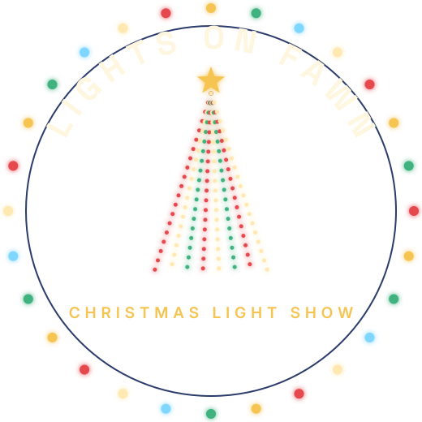

Seed Trees & Seed Stars
The tall centrepieces. Sequenced like a classic mega tree, with spirals, sweeps and bursts that climb to the stars on top.

Lights on Fawn · 2026 Show
Every light out front is a pixel that can change colour 40 times a second. Here's what's in the yard, what drives it, and how a song becomes a light show.
A "prop" is anything in the yard the show can light. Each one is made of individually addressable pixels, so any bulb can be any colour at any moment.
The tall centrepieces. Sequenced like a classic mega tree, with spirals, sweeps and bursts that climb to the stars on top.
A row that alternates little trees and arches along the front. Great for chases that run from one end of the yard to the other.
The big garage matrix and two smaller panels act as three windows onto the same night sky. Stars, snow and the occasional sleigh travel across all three.
Two giant bulbs with faces. One sings the lead vocal, the other backs it up, with mouth shapes timed to the lyrics.
Rings of pixels that pulse in and out from the centre, matching the other round props.
A north and a south snowflake from Gilbert Engineering, made of separate rings and spokes that can each be lit on their own.
A round spinner whose segments make the light look like it's whirling, spiralling or blooming outward.
Built to be four singing hats, but here it's used as a second spinner for big, round in-and-out effects.
Five colour floods wash the house itself, shifting to match the rest of the yard and flashing on the big moments.
From a song file on a laptop to light in the yard and sound in your car.
Each song is laid out frame by frame in xLights, free software where every prop in the yard is modelled pixel for pixel.
The finished sequences run on Falcon Player (FPP) inside a Genius Pixel 16 controller, which keeps the playlist on schedule every night.
The controller feeds long-distance receivers out in the yard, which pass the data down to each prop's pixels, 40 times a second.
PulseMesh streams the music to your phone in sync with the lights, so you can listen in your car without a loud speaker out front.
A sequence is the light show for one song: a timeline of effects placed on every prop, lined up to the beats, notes and lyrics. At 40 frames per second, a three-minute song is over 7,000 frames for every pixel in the yard.
Some songs start from sequences bought from other designers and are then remapped and retuned for these props. Others are built here. Each one goes through many versions, reviewed and tweaked until it feels right.
xLights Around the World (XATW) is a yearly video compilation of light shows from xLights users everywhere, all sequenced to the same songs. This yard's 2026 entries are Fireflies and Shake the Snow Globe. See the project ↗